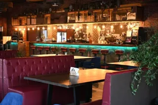

Locații de nuntă în Buftea
- locații în director
- 8
- medie ponderată Google
- 4,4 / 5
- evaluări Google
- 2.495
Cum alegi o locație în Buftea
În Buftea poți începe comparația cu Roua Garden (local pentru evenimente), Jardino Petrecei Copii Buftea. Inchiriere Locatie Evenimente Bucuresti, Ilfov (serviciu pentru petreceri de copii), Bokaa (local pentru evenimente). Aceste proprietăți apar în primele poziții când luăm în calcul împreună nota și numărul de evaluări Google. Salvează adresele care vă interesează pentru a le așeza apoi alături în fișa de comparare a ofertelor.
Pentru partea de afară, avem o descriere a spațiului folosit la evenimente la Studio 25 — Grădină la spațiul de evenimente private · Buftea Lake Resort — Cununie civilă în aer liber. La vizionare, cere schița pentru numărul vostru de persoane, inclusiv locul unde vor sta muzicienii și pe unde intră invitații.
Pentru invitații care rămân peste noapte, în apropiere de Roua Garden apare în evidența turistică și Calul Bălan din Buftea. Distanța măsurată între repere este de 0,5 km în linie dreaptă. Verifică traseul de întoarcere și rezervă camerele separat dacă oferta locației nu cuprinde cazare.
Dacă vrei să vezi două proprietăți în aceeași zi, poți continua de la Taste On Set spre The Brick din Corbeanca. Punctele lor sunt la 6,6 km în linie dreaptă. Deschide traseul înainte să fixezi ora celei de-a doua vizite, mai ales dacă grupul se deplasează cu autocarul.
Locații pentru vizionare
Ordinea ține cont de nota Google și de numărul evaluărilor. Cum calculăm ordinea

Fotografie a locației · Sursa fotografiei Buftea · Local pentru evenimente
Roua Garden
În relatarea unei familii, echipa Roua Garden s-a ocupat de prima aniversare a copiilor, de la decorul de grădină până la preparate și băuturi.
Strada Părului 14D, 070000 Buftea+40 731 134 264
Fotografie a locației · Sursa fotografiei Buftea · Serviciu pentru petreceri de copii
Jardino Petrecei Copii Buftea. Inchiriere Locatie Evenimente Bucuresti, Ilfov
La Jardino, o vizitatoare descrie umbra copacilor și fețele de masă cu dantelă, detalii care schimbă felul în care arată o masă de vară în Buftea.
Strada Părului 10, 070000 Buftea+40 723 546 139
Fotografie a locației · Sursa fotografiei Buftea · Local pentru evenimente
Bokaa
Complex pe malul lacului Buftea cu cununii pe ponton și saloane de până la 250 de persoane; media 4,6 din 1.469 de evaluări.
Aleea Cu Brazi 3-5, 070000 Buftea+40 723 164 299
Fotografie a locației · Sursa fotografiei Buftea · Restaurant cu specific egiptean
Taste On Set
Un client venise la Taste On Set pentru prânz și își amintește de mâncare ca de o experiență la care contau mirosurile, prezentarea și atmosfera sonoră.
Strada Studioului 1, 070000 Buftea+40 749 619 645
Fotografie a locației · Sursa fotografiei Buftea · Local pentru evenimente
Studio 25
Studio 25 din Studiourile Buftea are grădină pe malul lacului, 2.000 m² la exterior și capacitate publicată de 200–600 de persoane. Vezi opțiunile de catering.
Strada Studioului 1, 070000 Buftea+40 766 934 660
Fotografie a locației · Sursa fotografiei Buftea · Restaurant
Buftea Lake Resort
Buftea Lake Resort are ponton pentru cununie, patru saloane cu vedere la lac și piscină. Compară Waterly, B-Lake, Oasis și Allure și meniurile pentru sâmbătă.
Aleea Cu Brazi nr.3, 070000 Buftea+40 786 869 541
Fotografie a locației · Sursa fotografiei Buftea · Local pentru evenimente
Buftea Events (Studio Lake)
Cununie pe pontonul unui lac la Buftea: 1.000 m² afară, 550 m² în interior, 100–230 de invitați. Ce spun mirii despre nunțile de zi.
Strada Studioului 1, 709412 Buftea+40 721 894 076
Hartă ilustrată Buftea · Pensiune de familie
Pensiunea de vis
Pensiunea de vis. Dacă rudele sosesc după miezul nopții, trimite-le și o instrucțiune scrisă pentru acces, înainte să plece din sala evenimentului.
Zona Flamanzeni, Strada Părului 12E, 070000 Buftea+40 785 238 632
Întrebări despre locațiile din Buftea
Ce spații sunt documentate pentru evenimente în aer liber în Buftea?
Studio 25 — Grădină la spațiul de evenimente private. Buftea Lake Resort — Cununie civilă în aer liber. Buftea Events (Studio Lake) — Cununie pe ponton.
Care locație din Buftea are cele mai multe evaluări Google?
Bokaa are 1.469 de evaluări în profilul Google folosit la documentare. Evaluările acoperă și alte experiențe la proprietate, inclusiv vizitele fără eveniment.
Unde apare o intrare accesibilă în Buftea?
Profilurile Google indică o intrare accesibilă la Roua Garden, Taste On Set, Buftea Lake Resort. Pentru o cununie în exterior, cere detalii despre traseul dintre intrare și zona cu scaune.
Vizionări în apropiere
- Corbeanca · 5 locații. Între Taste On Set și The Brick sunt 6,6 km în linie dreaptă.
- Ostratu · 1 locație. Între Taste On Set și Zooma sunt 6,6 km în linie dreaptă.
- Tamași · 1 locație. Între Taste On Set și Secret Forest Garden Corbeanca - Locatie petreceri copii la piscina in aer liber sunt 6,8 km în linie dreaptă.